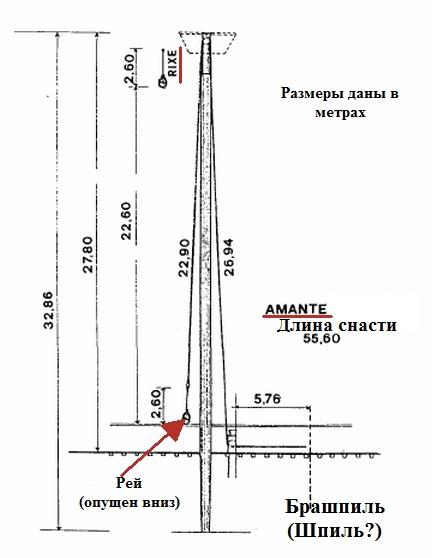
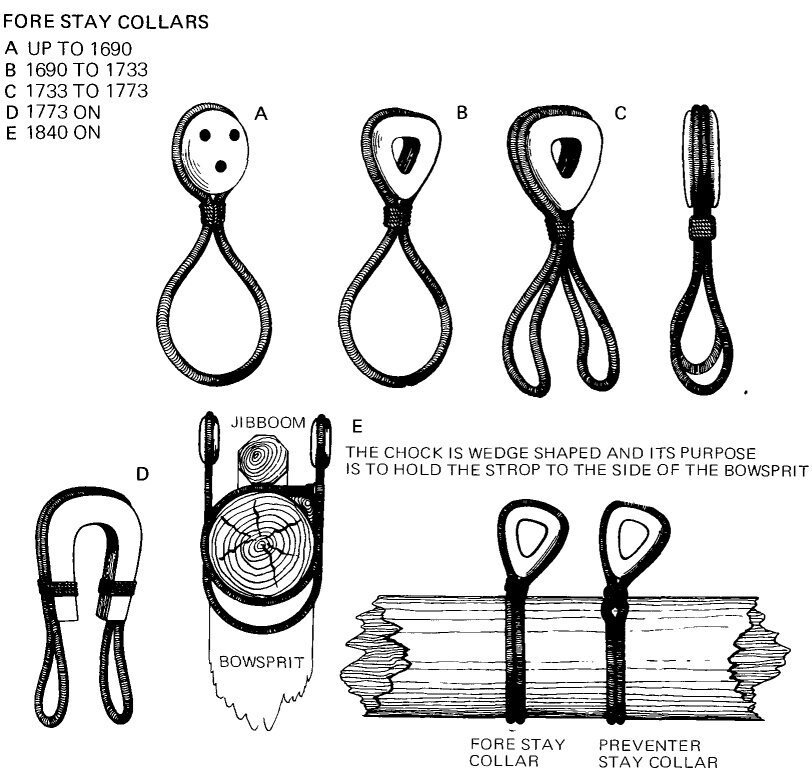
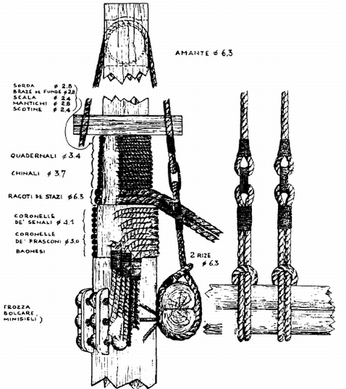

Если со стоячим такелажем венецианского кога все более или менее ясно, за небольшими исключениями, то бегучий такелаж содержит значительно больше загадок, пока еще не решенных.
Начнем со снастей для подъема и спуска рея, обозначив их современным обобщенным термином фалы. Судьба русского термина для обозначения этой снасти переменчива, она и по сей день нарушает стройность нашей терминологии в области бегучего такелажа. Впрочем, это касается не только русских терминов. Совершенствование такелажа с течением времени вызывало возникновение новых или кардинальное изменение старых снастей, и как следствие – изменение терминов для них. И зачастую совсем не бралась в расчет преемственность снастей, новые термины создавались независимо от старых. Мы же, оглядываясь назад, видим только изменившиеся слова, не принимаем во внимание, что они относились к изменившимся в процессе эволюции понятиям. Поэтому у нас почти параллельно существуют фал и гардель (а также орфографические варианты кардель или гардель-реп), английские halliard и jeer (с вариантами halyard, haulyards, jear, gear) а также французский термин drisse, итальянский drizza c вариантами rize, rixe, strixe и множеством других. Нам не удастся сейчас расставить все точки над i, иначе, занявшись этим, мы скатимся на обочину основной нашей дороги; но обещаю, что, если осел не сдохнет, мы вернемся к этому вопросу при рассмотрении соответствующих статей Морского словаря.
Итак, снасти для подъема рея на основной мачте (arboro de proda) венецианского кога. Они состоят из двух различных частей: rize (в другой орфографии rixe или strixe), и manti или amanti.

Отметим тот факт, что снасть парная: имеется левый фал и правый фал. Это не редкость. Вот как пишет об этом Александр Глотов (Изъяснение принадлежностей к вооружению корабля, 1816). Приведу отрывок из этого замечательного труда полностью, чтобы еще раз привлечь внимание к нему наших любителей морской истории:
Гардель-блок (a). Jeer-blocks. Poullies de dresse.
Трехшкивные блоки, из которых один прикрепляется на самой средине нижняго рея**, а другой накладывается сверх всего такелажа на топ мачты, где и задраивается (крепко затянуть), будучи взят между лонг-салингами (см. чертеж III, фиг. D) впереди передней краспицы; оба сии блока единственно служат для поднимания и опускания нижняго рея.
Гардель (b). Jeers. Drisses des basses vergues.
Несмоленая веревка, которая основывается между гардель-блоками (а), или, лучше сказать, вся сия основа вместе называется гардель; оная служит для поднимания на свои места и опускания на низ нижних реев. Толщина ея есть немного менее 1/4 диаметра своего рея.
Примечание. Прежде сего, в нашем флоте употребляли двое гарделей, то есть каждая из оных была расположена для поднимания и опускания рея по одну и по другую сторону мачты, но оныя по неудобству вовсе вышли из употребления. Опыты доказали весьма многия выгоды одной гардели противу прежде бывших двух; во-первых, рей, обращаясь почти на одной точке и будучи гарделью и борг найтовом, отведен далеко от передних вант, чрез то легче и больше обрасопится. Во-вторых, что, не опуская нижних реев, можно спустить стенги***. В-третьих, рей, отведенный сею гарделью далее от мачты при поднимании и опускании его, совсем не трет мачту и сверх того поднимается меньшим числом людей; кроме сих способов, чрез таковую перемену гарделей, у которой лопарь таковой же толщины, как и был при двух, вооружение делается чище, а притом как в тросах, так и в блоках экономия вдвое сохраняется.
** Притом соблюдают, чтобы шкивы гардель-блока смотрели вдоль корабля, и для сего остропливают его двумя стропами, у коих оставляют длинныя очки (петли), коими обнимают рей на средине, где и затягивают их под низом бензелем.
*** Англичане при блокаде неприятельских портов во время крепких ветров на открытых рейдах почти всегда делают так, что, спустив стенги, нижния реи оставляют на своих местах для того, дабы на всякой случай быть готову вступить хотя под нижние паруса; следовательно необходимость и нужда во всех случаях есть великой наставник и учитель, чрез что открыт и сей способ (иметь одну гардель) сколько удобной, столько же и полезной.
Цит ист., изд.1994 г. с.134-135
Так вот, и венецианцы в эпоху появления первых кораблей с прямым парусным вооружением на Средиземном море устанавливали для подъема и опускания рея два симметричных фала.
К рею непосредственно крепились два rixe. Изображения их не сохранились, но если судить по описанию, мы можем предположить, что этот rixe напоминал краг, наподобие тех, которые позже использовали для тяги штагов.

Краги для тяги штагов. Из книги James Lees “The Masting and Rigging…”
Используя имеющиеся в трактате сведения, мы можем заключить, что длина rixe была в пять раз больше длины окружности рея в самом толстом его месте. Даже если предположить, что трос делал два оборота вокруг рея, остается довольно длинный кусок. Поэтому мы не погрешим против истины, если предположим, что помимо петли на рее краг имел еще шкентель с блоком, в который и проводился строп фала – amante или mante. После этого снасть проводили через шкивы встроенного в топ мачты блока – кальцета и шли далее вниз к валу брашпиля или шпиля. К такой картине можно прийти и с другой стороны. Длина фала в тексте рукописи дана равной двум значениям высоты мачты над палубой. Кроме того, там же указывается, что трос должен совершить по меньшей мере полоборота вокруг вала шпиля (брашпиля?). Если рей находится в самом нижнем положении, то без учета длины шкентеля снасть вряд ли достанет до указанной точки. Поэтому правильным будет предположить, что длина шкентеля rixe составляет две-три длины окружности рея.
Окончательно сделанные предположения можно изобразить в качестве варианта в виде приведенной ниже картинки.

Остается невыясненным вопрос, как уравновешивались натяжения двух стропов, заведенных на один вал. Мы этого не знаем, но по крайней мере получаем еще один аргумент в пользу того, что на коге стоял не шпиль, а брашпиль. Для горизонтального ворота уравновесить усилия на двух тросах - задача более простая, чем для вертикального.
О других снастях бегучего такелажа поговорим в следующий раз.